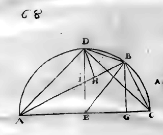

Proposition I: Squared Sides and Opposite Angles of a Right Triangle¶


Appendix Geometrica · Proposition I · Theorem I (Tab. 8, Fig. 68)
In any right-angled scalene triangle, the square of the hypotenuse has to the square of the greater side a lesser ratio, whereas the squares of these lines taken separately have to the square of the lesser side a greater ratio, than the opposite angle to the opposite angle.
Let triangle ABC be right-angled at B, whose hypotenuse is AC and greater side BA. I say first that AC to AB in square has a lesser ratio than the right angle ABC has to angle BCA. Let AC be bisected at E, and with center E and radius EA or EC let semicircle ABC be described, whose circumference will also pass through point B (for the angle at B is right); next, because side AB is greater than side BC, arc AB will also be greater than arc BC; and thus the circumference of semicircle ABC will not be bisected at point B; let it be bisected therefore, and let the point of division be D, which will indeed fall between A and B; and having joined lines DA, DIE, DC, DB, BC, BE, let perpendiculars BG, DE be raised from points B, D to diameter AC, and let line DH bisect angle ADB; finally, because angle ADC is double angle ADE, that is ADI (for this can easily be deduced), and likewise angle ADB is double angle ADH, by alternation angle ADC will be to angle ADB as angle ADI to ADH; and angle ADC is less than angle ADB (for it stands in a minor segment of the circle); therefore angle ADI will be less than ADH, and hence point H will fall between points I and B. These things thus laid down, because in triangle ADB the angle at the vertex is bisected by line DH, as straight line AD is to DB, so is segment AH of the base to HB, but AI to HB, and much more to IB, has a lesser ratio than straight line AH to HB, namely AD to DB; but straight line AD to DB has also a lesser
f. 0079 · p. 62(margin: Almagest) ratio than arc AD to arc DB; therefore straight line AI to IB will have a lesser ratio than the said arc AD to arc DB; and by composition and conversion of ratio, straight line AB to AI, or AG to AE, will have a greater ratio than arc ADB has to arc AD, and the doubles of the consequents; but AC is double AE, and circumference ADC is double AD; therefore AG to AC, namely square AB to square AC, will have a greater ratio than circumference ADB to circumference ADC, yea than angle AEB to two right angles, and their halves, namely angle ACB to the right angle ABC; and by inversion, square AC to square AB will have a lesser ratio than angle ABC to angle ACB.
II. I say that square AC to square BC, that is, line AC to line BC in square, has a greater ratio than the right angle ABC to angle BAC. For since straight line AG to AC had a greater ratio than circumference ADB to circumference ADC, by inversion straight line AC to AG will have a lesser; but by conversion of ratio, straight line AC to CG will have a greater ratio than circumference ADC to BC; yet as straight line AC to CG, so is square CA to square CB, and as circumference ADC to CB, so are two right angles to angle BEC, or their halves, that is, one right angle ABC to angle BAC; therefore square AC to square CB will have a greater ratio than the right angle ABC to angle BAC.
III. Lastly, I say that square AB to BC itself has also a greater ratio than angle BCA to BAC: for (as was just demonstrated) straight line AC to CG has a greater ratio than circumference ADC to CB itself; therefore by division AG to GC, that is, square AG to CB itself, or square AB to BC, will have a greater ratio than circumference ADB to BC itself, namely than angle ACB to angle BEC, and their halves; that is, angle ACB to angle BAC, Q.E.D.